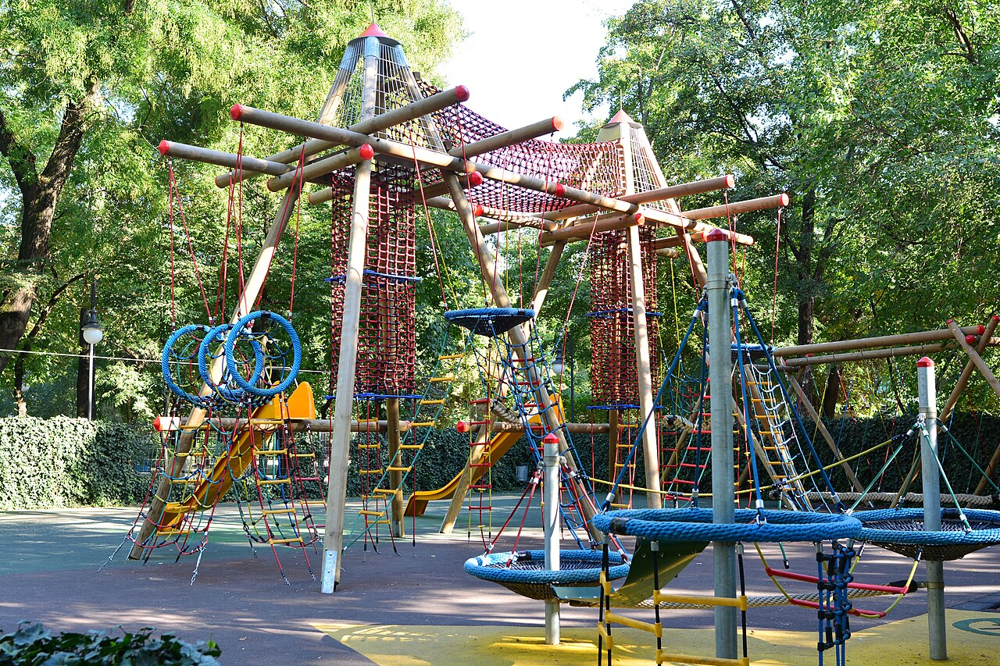
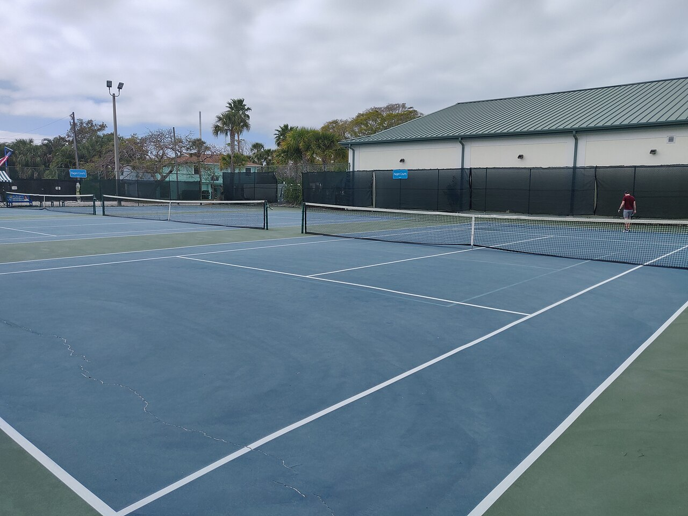
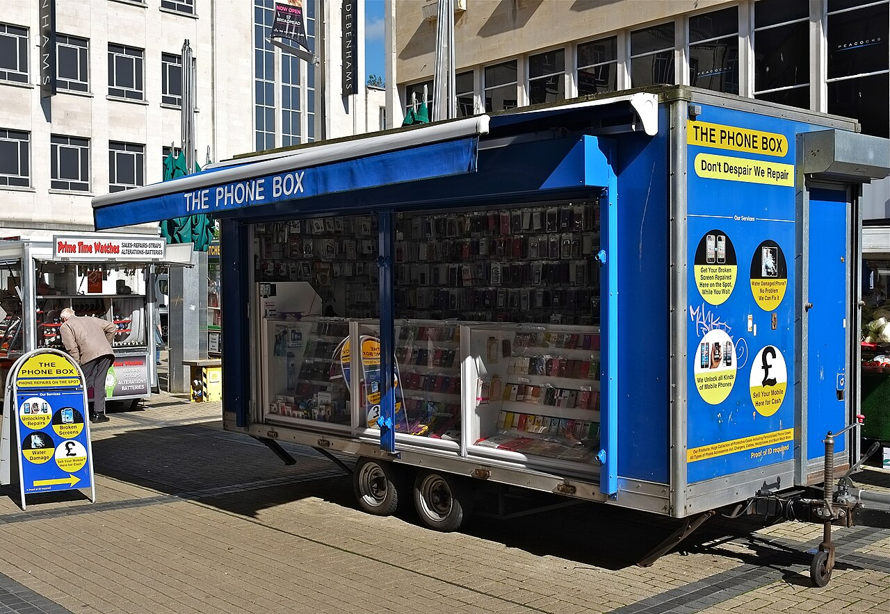
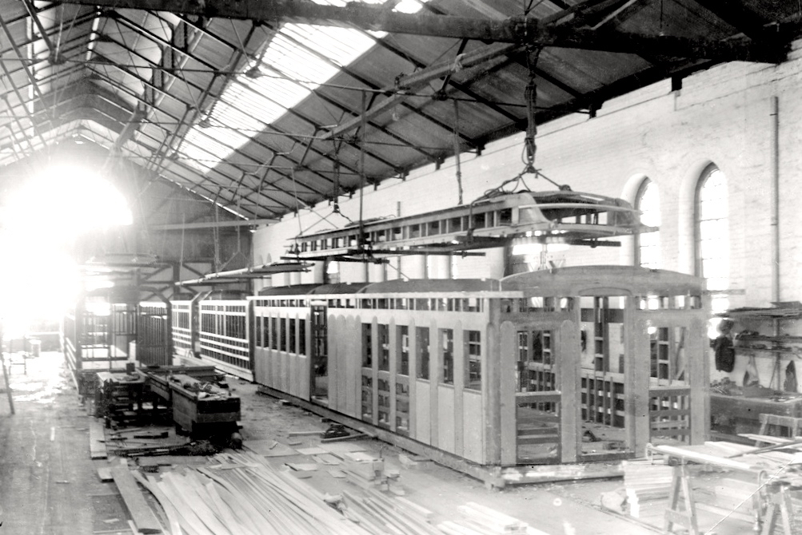

Бухарест.
Ближе, чем кажется.
Люди, места и истории города. Куда пойти, как устроена жизнь и что стоит знать — коротко, по делу и с любопытством.
Как добраться из аэропорта Отопень и не запутаться в транспорте
Как добраться в аэропорт Отопень OTP: поезд до Gara de Nord, автобус 100, встреча пассажиров и важные изменения остановок в 2026 году.
Читать историю
Кружки для детей в Бухаресте: с чего начать поиск
Детский кружок должен подходить по возрасту, нагрузке и логистике семьи. Пробное занятие и понятная программа обычно ценнее громких обещаний быстрого
Читать историю
Где найти компанию для тенниса, бега и спорта
Как найти партнёров для тенниса, бега и тренировок в Бухаресте: где спрашивать, что указать в сообщении и как безопасно договориться о встрече.
Читать историюЗнаете Бухарест? Расскажите другим.
Вопросы, советы, знакомства и разговоры о городе — в нашем Telegram-чате.
Городская лента
Массаж в Бухаресте: как выбрать специалиста
Расслабляющий массаж, спортивное восстановление и лечебные процедуры — разные услуги. Прежде чем записываться, уточните цель и квалификацию исполнител
Читать историюКуда обращаться за медицинской помощью в Бухаресте
Поиск больницы зависит от цели: экстренная помощь, плановый специалист, обследование или госпитализация. Первым шагом определите срочность, а не ищите
Читать историюЭндокринолог в Бухаресте: как выбрать врача и записаться
Если нужен эндокринолог, важно найти подходящего специалиста и понять условия приёма: по страховке, направлению или платно. Не назначайте себе анализы
Читать историю
Ремонт телефона в Бухаресте: экран, аккумулятор и диагностика
Телефон упал, перестал заряжаться или быстро разряжается? Перед передачей устройства в ремонт важно защитить данные и договориться о цене, а не только
Читать историюГде купить телефон в Бухаресте: новый или б/у без неприятных сюрпризов
Покупая смартфон в Румынии, сравните не только цену на витрине: происхождение устройства, чек, условия возврата и реальная гарантия могут оказаться ва
Читать историю
СТО в Бухаресте: как найти автосервис и не переплатить
Машина начала шуметь, загорелась ошибка или нужен плановый сервис? Главное — не выбирать первое объявление по самой низкой цене: сперва разделите диаг
Читать историю